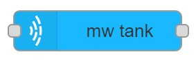
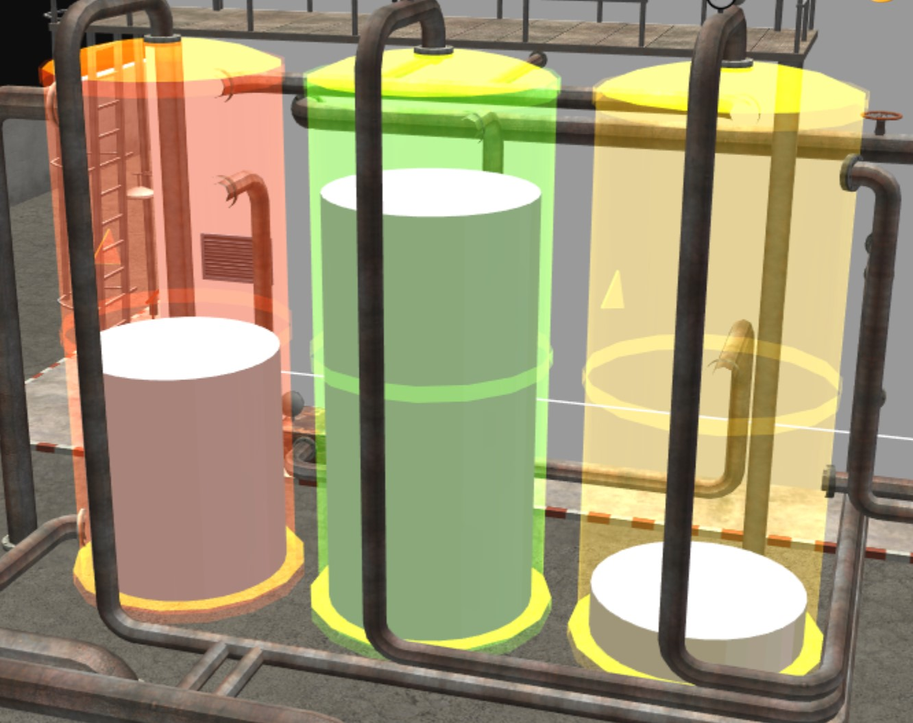
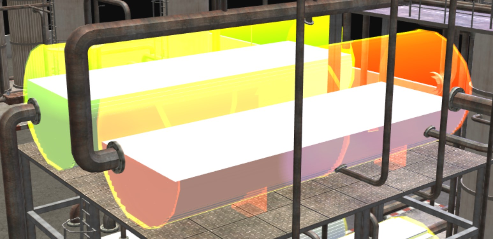

mw tank

Usage
Creates a tank which can be used to display values by changing surface color. The tank contains liquid which can be used to display the fullness of the tank by setting the level.
Types of tanks
Vertical tank
The vertical tank is built from two elements. The tank itself and it contains a cylinder which represents the liquid. 
Configuration
Configuration from file
File NameName of the configuration file.NameName of the node in the editor.
Local configuration
NodeIDID of MaxWhere node to be set.- Mapping
Minimum liquid valueMinimum value which can by displayed by the liquid.Maximum liquid valueMaximum value which can by displayed by the liquid.Minimum value for color indicatorMinimum value which can by displayed by the surface color.Maximum value for color indicatorMaximum value which can by displayed by the surface color.Transparent materialTransparent material for the tank to make liquid visible.
- Tank
mesh urlName of Ogre mesh file.physical mesh urlName of .obj file that contains the physical shape of the object.shapeName of shape type.- Position
xx coordinate of position to setyy coordinate of position to setzz coordinate of position to set
- Orientation
ww member of orientation quaternion to setxx member of orientation quaternion to setyy member of orientation quaternion to setzz member of orientation quaternion to set
ScaleScale to set.
-
Liquid
mesh urlName of Ogre mesh file.physical mesh urlName of .obj file that contains the physical shape of the object.shapeName of shape type.- Position
xx coordinate of position to setyy coordinate of position to setzz coordinate of position to set
- Orientation
ww member of orientation quaternion to setxx member of orientation quaternion to setyy member of orientation quaternion to setzz member of orientation quaternion to set
- Scale
xscale along x coordinate to setyscale along y coordinate to setzscale along z coordinate to set
- Max Scale
xmaximum scale along x coordinate which fits inside tankymaximum scale along y coordinate which fits inside tankzmaximum scale along z coordinate which fits inside tank
-
NameName of the node in the editor.
Horizontal tank
The horizontal tank is built from two elements. The tank itself and it contains resolution number of building blocks which are representing the liquid.

Configuration
Configuration from file
File NameName of the configuration file.NameName of the node in the editor.
Local configuration
NodeIDID of MaxWhere node to be set.- Mapping
Minimum liquid valueMinimum value which can by displayed by the liquid.Maximum liquid valueMaximum value which can by displayed by the liquid.Minimum value for color indicatorMinimum value which can by displayed by the surface color.Maximum value for color indicatorMaximum value which can by displayed by the surface color.Transparent materialTransparent material for the tank to make liquid visible.
- Tank
mesh urlName of Ogre mesh file.physical mesh urlName of .obj file that contains the physical shape of the object.shapeName of shape type.- Position
xx coordinate of position to setyy coordinate of position to setzz coordinate of position to set
- Orientation
ww member of orientation quaternion to setxx member of orientation quaternion to setyy member of orientation quaternion to setzz member of orientation quaternion to set
ScaleScale to set.LengthLength of tank.RadiusRadius of tank.
-
Liquid
mesh urlName of Ogre mesh file.resolutionNumber of liquid building blocksedge lengthEdge lenfth of building block.
-
NameName of the node in the editor.
Input
The input value can set the following features.
- If msg.topic is setColor than the value is setting the surface color of the tank.
- If msg.topic is setLevel than the value is setting the level of the liquid.
- If msg.topic is toggleTransparency than the material is toggling between the trasparent material and the original.
Output
No output.